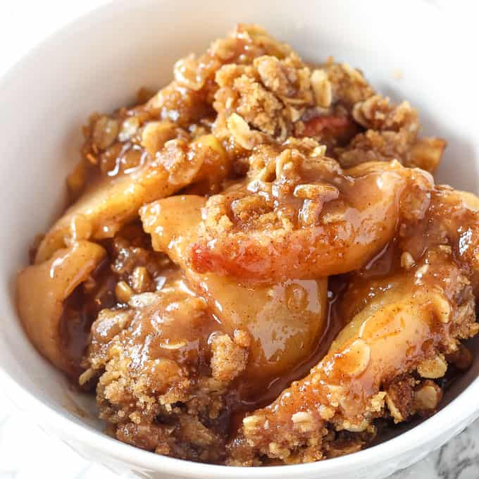

Apple Crisp
Source: “5-Ingredient Apple Crisp” from cookingforkeeps.com
Yield: 1 apple crisp
Ingredients
- 1 ¾ cups rolled/quick-cooking oats, divided
- 6 cups sliced apples
- ½ tsp kosher salt, divided
- ½ tsp ground cinnamon
- ¼ cup + ⅓ cup packed brown sugar
- 6 tsp unsalted butter, slightly softened and divided
Instructions
- Preheat oven to 375F. Grease a small baking dish with butter or non-stick cooking spray. Use a 6x9 inch pan or loaf pan.
- Add 1 cup oats to a food processor. Blend until it resembles flour. Set aside.
- Toss apples with 2 tablespoons of oat flour, ¼ teaspoon salt, cinnamon, and ¼ cup brown sugar. Cut 2 tablespoons of butter into cubes. Toss with apples. Transfer to prepared baking dish.
- Add remaining oat flour, oats, salt, brown sugar and cinnamon to a medium bowl. Use fingers to cut butter into the flour until the butter is distributed and the mixture is crumbly.
- Sprinkle the crumble on top of the apples. Bake until brown and crispy, about 45 minutes. Serve with vanilla ice cream if desired. You want it.